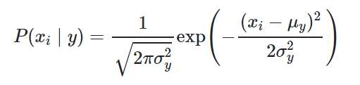

The Naive Bayes Classifier technique is based on the Bayesian theorem. Naïve Bayes algorithm makes the assumption that the occurrence of a certain feature is independent of the occurrence of other features.
Naive Bayes learners and classifiers can be extremely fast compared to more sophisticated methods. The decoupling of the class conditional feature distributions means that each distribution can be independently estimated as a one-dimensional distribution. This, in turn, helps to alleviate problems stemming from the curse of dimensionality.
Suppose you are designing a classifier in a 2 or 3 dimension space, which is easy to model and analyze. Even, you can find a reasonable frontier between examples of different classes just by visual inspection. However, various phenomena may arise when you want to analyse and process data in high-dimensional spaces. Some algorithms that work fine in low dimensions may even become intractable when the input is high-dimensional.
GaussianNB implements the Gaussian Naive Bayes algorithm for classification. The likelihood of the features is assumed to be Gaussian:

In the equation both the sigma and mu are estimated using maximum likelihood estimation.
Now, we focus on how scikit-learn can be used to implement the Naive Bayes algorithm.
from sklearn.naive_bayes import GaussianNB
gnb = GaussianNB()
y_pred = gnb.fit(X_train, y_train).predict(X_test)